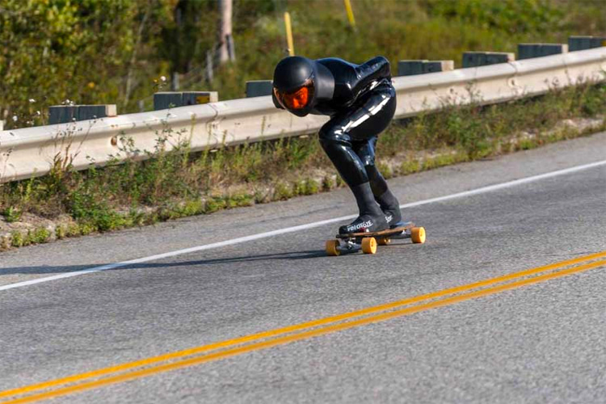
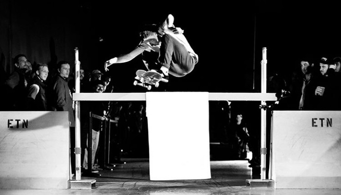

World records
Since its creation people have been trying to push skateboarding to its absolute limits. Whether it be mind-bending tricks, dangerous feats, or just sheer insanity, skaters always seem to find a way to do what nobody’s ever done before. This article will go over some of the most interesting Guinness world records to date.
World's Largest Skateboard
In 2009, Rob Dyrdek and Joe Ciaglia created the largest skateboard ever. It was 11 meters long, 3 meters wide, and 1 meter high. That’s 0.12029746281714786 football fields! At that point they should try to get the first skateboarding elephant.
Fastest Recorded Downhill Speed
In 2017, Peter Conolly rode a longboard at 91.17 miles per hour in Les Éboulements in Quebec, Canada. At that speed you can cross an entire football field in 2.2464 seconds! If I were going that fast on a plank of wood with wheels on it I think I’d pack a diaper just in case.
Highest Flatground Ollie
In 2011, Aldrin Garcia managed to pop a 45 inch ollie at the Maloof High Ollie Challenge in Las Vegas, Nevada, USA. That’s 12.5% the height of a regulation football goal post. Just 55 inches higher and he would have ollied himself into a field goal.